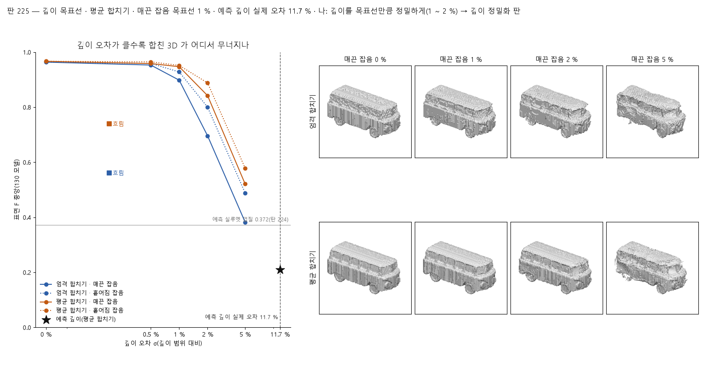

m1_tr0225_h000_깊이목표선
깊이가 얼마나 정확해야 9 시점을 합친 3D 가 정답 깊이로 합친 만큼 나오나?
판정 · 나 — 평균 합치기 · 매끈 오차 목표선 1 %(0.967 → 0.947 · 2 % 0.842 · 5 % 0.521) · 엄격 깎기 0.5 % · 흐림(2 px) 평균 0.740 · 예측 깊이 실제 오차 중앙 11.7 %(평균 합치기 0.210) → 깊이 정밀화 판(먼저 Depth Anything 실제 오차 · 깊이 해상도 · 그다음 다시점 맞춤 깊이 · 선으로 경계)
분석
한 줄로
물음: 깊이가 얼마나 정확해야 9 시점을 합친 3D 가 정답 깊이로 합친 만큼 나오나?
답: 깊이 범위의 1 % 다(결정 표 「나」). 평균 합치기(TSDF)로 합치면 매끈한 오차 1 % 까지는 표면 F 가 0.967 → 0.947 로 버티고, 2 % 에서 0.842, 5 % 에서 0.521 로 무너진다. 그런데 지금 예측 깊이의 실제 오차는 11.7 %(중앙)다. 목표선보다 열 배 넘게 거칠다.
왜 이 판을 했나
tr224 에서 예측 지도로 합친 3D 는 표면 F 0.26 이었다(정답 지도 0.96). 정답 축척을 줘도 예측 깊이가 실루엣 껍질보다 나빴다. 그럼 깊이는 얼마나 정확해야 하나? 그 목표선을 학습 없이 먼저 쟀다. 합치기 방식이 문제인지도 같이 봤다.
바꾼 것 하나
깊이의 오차 크기만 바꿨다. tr224 와 같은 모델 132 개 · 9 시점 · 128³ 격자에서, 정답 실루엣과 정답 깊이에 일부러 오차를 넣었다. 오차는 셋이다. 화소마다 흩어진 잡음, 넓게 매끈하게 틀어진 잡음(망 오차 꼴), 경계를 2 화소 뭉갠 흐림이다. 크기는 깊이 범위의 0.5 · 1 · 2 · 5 % 다. 합치기는 엄격 깎기(tr212)와 평균 합치기(시점마다 면까지의 거리를 ±3 칸으로 잘라 평균) 둘이다.
결과

| 표면 F 중앙(132 모델) | 오차 0 | 0.5 % | 1 % | 2 % | 5 % |
|---|---|---|---|---|---|
| 평균 합치기 · 매끈 오차 | 0.967 | 0.958 | 0.947 | 0.842 | 0.521 |
| 엄격 깎기 · 매끈 오차 | 0.964 | 0.953 | 0.898 | 0.696 | 0.382 |
| 평균 합치기 · 흩어진 오차 | 0.967 | 0.965 | 0.952 | 0.888 | 0.579 |
| 엄격 깎기 · 흩어진 오차 | 0.964 | 0.959 | 0.928 | 0.800 | 0.488 |
- 경계를 2 화소 뭉갠 흐림만으로도 평균 0.740 · 엄격 0.562 다.
- 예측 깊이(예측 실루엣 + 정답 축척)를 평균 합치기로 합치면 0.210 이다. 실제 오차 중앙은 11.7 % 다.
- 목표선(오차 0 보다 0.05 넘게 안 떨어지는 가장 큰 오차)은 평균 합치기 1 %, 엄격 깎기 0.5 ~ 1 % 다.
왜 이렇게 나왔나
확인한 것
- 표면 F 의 허용(크기의 1 %)과 깊이 목표선(깊이 범위의 1 %)이 같은 크기다. 자가 1 % 를 보니 깊이도 1 % 여야 한다.
- 평균 합치기는 모든 오차 크기에서 엄격 깎기보다 낫다(매끈 2 % 에서 0.842 대 0.696). 하지만 오차를 열 배 줄여 주지는 못한다. tr224 의 「합치기 방식」 문제는 반만 맞았다.
- 매끈한(넓게 틀어진) 오차가 흩어진 오차보다 해롭다. 여러 시점에서 평균을 내도 상쇄되지 않기 때문이다. 망 오차가 바로 매끈한 꼴이다.
- 경계 뭉갬(tr218 에서 본 급변부 오차)만으로도 크게 떨어진다(0.740).
짐작 (아직 확인 안 함)
- 한 장에서 추정하는 깊이(우리 망 · Depth Anything 같은 단안 깊이)가 1 % 에 닿기는 어려울 것이다. tr217 에서 렌더로도 우리 0.053 · Depth Anything 0.074(깊이 범위 대비)였다. 1 % 에 다가가려면 여러 시점이 서로 맞춰 주는 깊이(삼각 측량처럼)나 선으로 경계를 세우는 쪽이 필요할 것이다.
한계
- 오차는 일부러 넣은 꼴(정규 · 8 화소 흐림 · 2 화소 경계 흐림)이다. 망의 진짜 오차 꼴과 같지 않다.
- 평균 합치기는 자르는 폭 하나(±3 칸)만 썼다.
- 예측 깊이 오차 11.7 % 는 이 132 모델 · 9 시점(위 · 아래 89.5° 포함 · 학습에 없던 모양과 고도)에서 잰 것이다. tr217 시험 렌더(학습과 같은 분포)에서는 5 % 안팎이었다.
- 그림을 한 번 고쳤다. 예측 깊이 점(11.7 %)이 가로축 밖에 그려져서, 축을 넓혀 다시 그렸다. 숫자는 그대로다.
배운 것과 다음
합친 3D 가 1 % 자에서 버티려면 깊이가 깊이 범위의 1 % 안이어야 한다. 지금 예측 깊이는 11.7 % 로 열 배 넘게 거칠다. 평균 합치기는 돕지만 그 차이를 못 메운다.
- (결정 표 「나」) 깊이 정밀화 판 — 학습 없이 먼저 싼 것부터 잰다. 같은 9 시점에서 Depth Anything 깊이의 실제 오차(%)와, 우리 망 깊이를 128² → 더 높은 해상도로 했을 때를 본다. 단안 깊이로 1 % 근처라도 가는지 확인한다.
- 단안 깊이가 1 % 와 멀면, 여러 시점이 서로 맞추는 깊이(같은 점을 여러 장에서 찾아 깊이를 구함)를 후보로 본다.
- 그 사이 선 쪽도 다시 본다. tr216 은 정답 3D 선으로 모서리를 세워 선 F 0.839 였다. 깊이가 거칠어도 선이 경계를 세우면 버틸 수 있는지 잴 수 있다.
판 기록
- 카드 · 코드 커밋 b1bfeb2(돌리기 전) · 잼 일꾼 넷 약 40 분 · 판정 잼.json · 그림 그림.png · 모델별 out/설명/캐드부품/모델225/(git 밖).